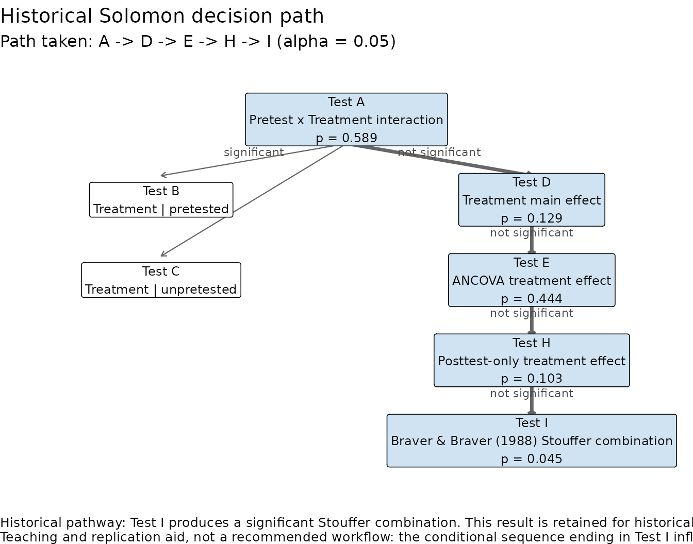
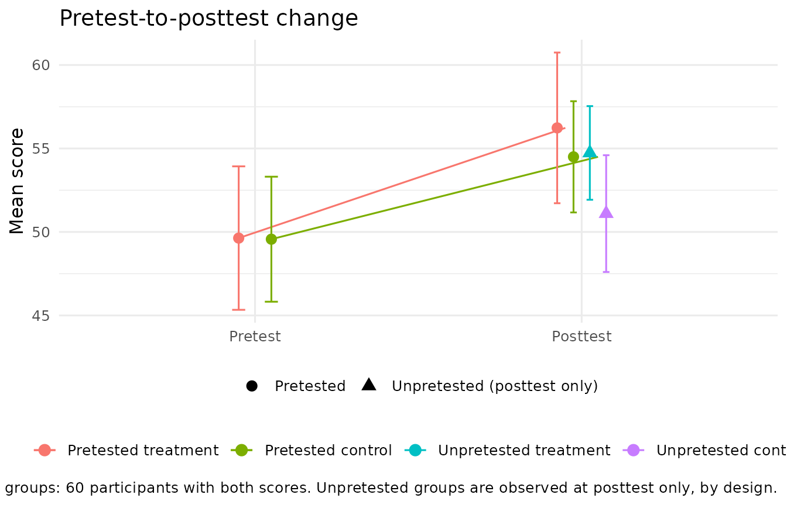

Why preserve the classic analysis?
The Solomon four-group design has a long methodological history. Earlier approaches analyzed different pieces of the design sequentially, using tests that came to be described as Tests A through I.
solomonR reproduces this historical workflow for two
reasons:
- it remains useful for teaching how the Solomon design developed; and
- it allows researchers to reproduce analyses based on historical recommendations.
The classic workflow should not be interpreted as the default modern
analysis merely because it is historically important.
solomonR therefore distinguishes the historical procedure
from the package’s modern model-based and randomization-based
approaches.
The implementation draws especially on the historical discussions of Huck and Sandler (1973), Braver and Braver (1988), and later simulation work examining the operating characteristics of conditional Solomon procedures.
The four groups
A Solomon four-group design contains:
| Group | Pretest | Treatment | Posttest |
|---|---|---|---|
| 1 | Yes | Yes | Yes |
| 2 | Yes | No | Yes |
| 3 | No | Yes | Yes |
| 4 | No | No | Yes |
Groups 1 and 2 permit a pretest-adjusted treatment comparison.
Groups 3 and 4 provide a treatment comparison that cannot itself have been influenced by administration of the pretest.
Together, the four groups permit investigation of both the treatment effect and possible pretest sensitization.
Example data
solomonR includes an example dataset with all four
Solomon groups.
library(solomonR)
data(solomon_example)
demo_preview <- head(
solomon_example,
6
)
demo_preview$y_post <- round(
demo_preview$y_post,
2
)
demo_preview$y_pre <- round(
demo_preview$y_pre,
2
)
knitr::kable(
demo_preview,
align = "rrrr"
)| y_post | treat | pretested | y_pre |
|---|---|---|---|
| 60 | 1 | 1 | 55 |
| 71 | 1 | 1 | 42 |
| 58 | 1 | 1 | 58 |
| 54 | 1 | 1 | 34 |
| 57 | 1 | 1 | 42 |
| 45 | 1 | 1 | 38 |
The pretest variable is structurally absent for participants who were not pretested. Those missing values are therefore part of the design, not ordinary missing observations.
Running the historical analysis
The complete historical analysis is available through
fit_solomon_classic():
classic <- with(
solomon_example,
fit_solomon_classic(
y_post,
treat,
pretested,
y_pre
)
)
classic
#> Classic Solomon analysis (historical teaching workflow)
#> -------------------------------------------------------
#> Selected pretested-group method: Test E (ancova)
#> Historical decision path: A -> D -> E -> H -> I
#>
#> Historical Tests A-I
#> --------------------
#> All tests are shown below. Tests marked [PATH] were reached by
#> the historical decision sequence for these data.
#>
#> [PATH] Test A: Pretest x Treatment interaction F(1, 116) = 0.29, p = 0.589
#> Test B: Treatment effect among pretested groups F(1, 116) = 0.49, p = 0.486
#> Test C: Treatment effect among unpretested groups F(1, 116) = 2.14, p = 0.146
#> [PATH] Test D: Treatment main effect F(1, 116) = 2.34, p = 0.129
#> [PATH] Test E: ANCOVA treatment effect F(1, 57) = 0.59, p = 0.444
#> Test F: Gain-score treatment effect F(1, 58) = 0.46, p = 0.499
#> Test G: Repeated-measures Treatment x Time interaction F(1, 58) = 0.46, p = 0.499
#> [PATH] Test H: Posttest-only treatment effect t(58) = 1.66, p = 0.103
#> [PATH] Test I: Braver & Braver (1988) Stouffer combination Z = 1.69, p(one-tailed) = 0.045 [E + H (ANCOVA + posttest-only)]
#>
#> Historical interpretation
#> -------------------------
#> Historical pathway: Test I produces a significant Stouffer combination. This result is retained for historical replication and should be interpreted in light of later Type I error critiques.
#>
#> Groups 3-4 effect size: Hedges g = 0.423, 95% CI [-0.086, 0.938] (noncentral t)
#>
#> Caution: Test I, the Braver & Braver (1988) Stouffer combination, is
#> reproduced for historical teaching and replication. Later simulation
#> work (see Sawilowsky et al., 1994) raised concerns about Type I error
#> for the conditional meta-analytic sequence; it is not the default
#> modern inferential recommendation in solomonR.The printed output reports all of the historical tests but marks the
tests actually reached by the historical decision sequence with
[PATH].
This distinction is important.
A test can be calculated for teaching or inspection without having been reached under the historical conditional procedure.
plot_classic_flow() draws the conditional sequence as a
decision tree and highlights the route these data took, with the p-value
of each test reached:
plot_classic_flow(classic)
The caption repeats the caution discussed below: the sequence ending in Test I is kept for teaching and replication, not as a recommended analysis.
Tests A-D: the four-group posttest model
The first part of the classic workflow is based on the four-group posttest model.
Test A: Pretest x Treatment interaction
Test A asks whether the treatment effect differs between pretested and unpretested participants.
In modern language, this is the pretest-by-treatment interaction and is the primary statistical representation of pretest sensitization.
Tests B and C: simple treatment effects
Test B estimates the treatment effect among pretested participants.
Test C estimates the treatment effect among unpretested participants.
Test D: treatment main effect
Test D evaluates the treatment effect averaged equally across the pretested and unpretested conditions.
In solomonR, this is represented by the contrast
This equal-weighted contrast is important because the treatment coefficient by itself represents the treatment effect only in the reference pretest condition.
The individual historical results are available from the fitted object. For example:
classic$tests$A$result
classic$tests$D$resultTests E-G: analyses within the pretested groups
Historical approaches proposed several ways to make use of the baseline measurement available in Groups 1 and 2.
Test E: ANCOVA
Test E compares treatment and control among pretested participants while adjusting posttest scores for the pretest.
This is the default pretested-group method in
fit_solomon_classic().
classic$tests$E$resultTest F: gain-score analysis
Test F compares change scores between the two pretested groups.
classic$tests$F$resultThe change being compared is visible in the pretested groups’ pretest
and posttest means. plot_solomon_change() shows them beside
the unpretested groups, which are observed at posttest only:
with(solomon_example, plot_solomon_change(y_post, treat, pretested, y_pre))
Test G: repeated-measures formulation
Test G represents the corresponding two-wave treatment-by-time comparison.
For two measurement occasions, the inferential contrast is
algebraically connected to the gain-score comparison.
solomonR retains Test G as a separate historical label
because the distinction is useful pedagogically.
classic$tests$G$resultThe pretested-group analysis can also be selected explicitly when reproducing a particular historical strategy.
fit_solomon_classic(
y_post,
treat,
pretested,
y_pre,
pretested_test = "gain"
)Test H: posttest-only comparison
Test H compares Groups 3 and 4, which did not receive the pretest.
classic$tests$H$resultBecause these groups were never pretested, this comparison provides a direct treatment contrast uncontaminated by administration of a baseline measure.
solomonR also reports Hedges’
for this posttest-only comparison when available.
Test I: Braver & Braver (1988) Stouffer combination
Braver and Braver (1988) proposed combining evidence from the pretested and unpretested treatment comparisons using Stouffer’s method.
When requested, solomonR reproduces this historical
analysis using directional one-tailed p-values aligned with the
same treatment direction.
cat(
sprintf(
"Stouffer Z = %.2f, p = %s",
classic$tests$I$result$z,
if (
classic$tests$I$result$p.value < .001
) {
"< .001"
} else {
sub(
"^0",
"",
sprintf(
"%.3f",
classic$tests$I$result$p.value
)
)
}
)
)
#> Stouffer Z = 1.69, p = .045This detail matters. A directional one-tailed p-value is not obtained correctly by mechanically dividing every two-sided p-value by two without considering the sign of the effect.
Why Test I is treated cautiously
The Stouffer procedure is included because it is part of the history of the Solomon design and may be required when reproducing historical analyses.
It is not the default modern recommendation in
solomonR.
Later simulation work showed that conditional analysis sequences can have undesirable experiment-wise Type I error properties. In particular, choosing later tests based on the statistical significance of earlier tests changes the operating characteristics of the overall procedure.
For contemporary applied work, researchers should therefore consider a single prespecified model or a randomization-based analysis rather than automatically following a significance-driven testing tree.
See the unified GLM vignette for the primary modern observed-variable workflow:
vignette("glm-solomon", package = "solomonR")Historical analysis versus modern analysis
The two approaches answer related questions but serve different purposes.
| Goal | Suggested approach |
|---|---|
| Teach the historical Solomon procedure | fit_solomon_classic() |
| Reproduce a historical Tests A-I analysis | fit_solomon_classic() |
| Estimate Solomon effects in one model | fit_solomon_glm() |
| Conduct randomization-based inference | perm_solomon() |
| Use full-information likelihood | fit_solomon_ml() |
| Model latent outcomes | fit_solomon_sem_latent() |
The historical procedure is therefore preserved rather than erased, while modern methods are available alongside it.
References
Braver, M. W., & Braver, S. L. (1988). Statistical treatment of the Solomon four-group design: A meta-analytic approach. Psychological Bulletin, 104, 150-154.
Huck, S. W., & Sandler, H. M. (1973). A note on the Solomon 4-group design: Appropriate statistical analyses. The Journal of Experimental Education, 42, 54-55.
Sawilowsky, S. S., Kelley, D. L., Blair, R. C., & Markman, B. S. (1994). Meta-analysis and the Solomon four-group design. The Journal of Experimental Education, 62, 361-376.